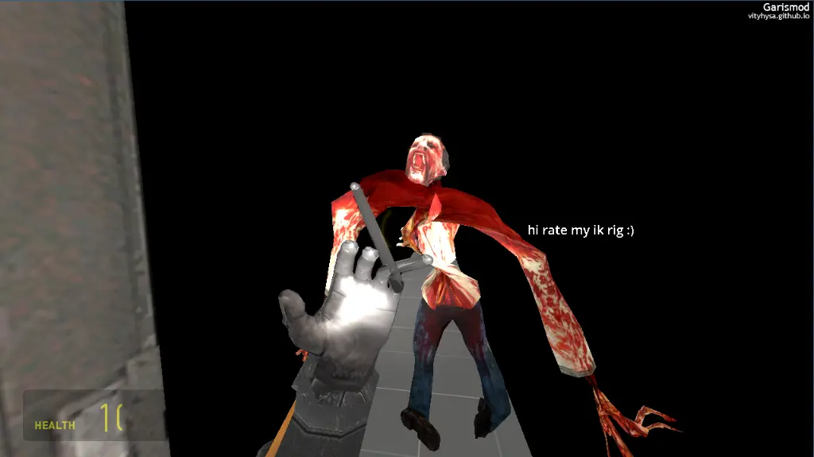
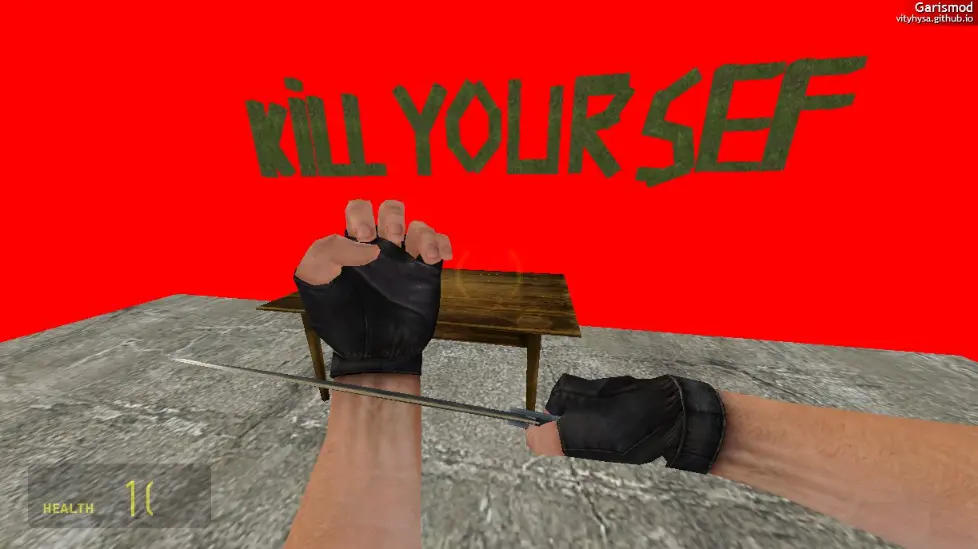
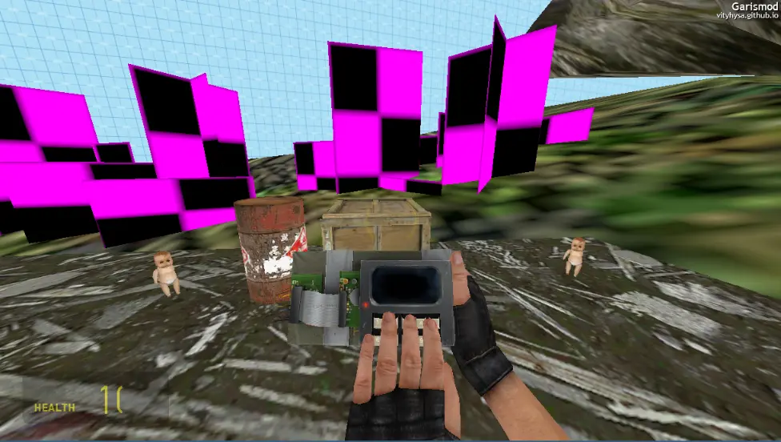

CONTAINS FLASHING LIGHTS AND MAY CAUSE MOTION SICKNESS (Also May have Self-harm topic) NOT AFFILIATED WITH ANYONE OR ANYTHING MENTIONED Garismod by vityhysa COntrols: W - Move Forwards A / Arrow Left - Move Lefts S - Mofe backwar D / Arrow Right- Move Right F - Flaslight Z - Zoom / Shoot E - Interact / Grab R - Restart CTRL - Crouch ESC - Menu SHIFT - Sprint / Jump Mouse wheel - Switch Wweapon Mouse Left - Shoot Сredits: Made in Godot Engine 4.6.2 Alot of assets by Valve & Some by Team Psykskallar, NeoDement, Foundonthetape, Kayin Inpsried by Garry's Mod 9 by Garry Newman & Source Engine in General, I Wanna Be the Guy by Kayin Thx H2xDev for the GodotVMF Plugin Thx Capcom Co., Ltd. for some Music Thx TheLegendofRenegade for some Music The Engines were done by hand. No Templates or Open-source resources were used. Bugs&Questions can be reported @ vityhysa.github.io/talkerings (You may also find Updatelogs There) Thx for Plaing vityhysa.github.io